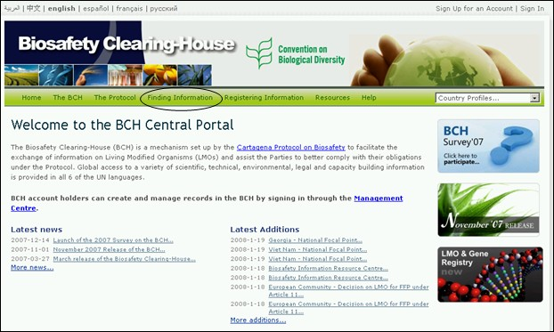

URL: http://bch.cbd.int/database/
EL CIISB queda establecido bajo el Artículo 20 para facilitar el intercambio de información en relación con los Organismos Vivos Modificados -OVM. Los requerimientos de los tipos de información son listados en éste Artículo y el CIISB mantiene bases de datos con la información pertinente. El acceso a esta información se provee a través de la página Búsqueda de Información del sitio web del CIISB, el cual puede encontrarse mediante un vínculo en la barra de navegación de la página de inicio del CIISB Bienvenido al Portal Central del CIISB.

Figura 1

Figura 2
Esta sección permite a los usuarios acceder a una amplia variedad de información científica, técnica, ambiental, jurídica y de creación de capacidad en las bases de datos del CIISB. Las categorías de información se listan en la página Búsqueda de Información.
Las diversas categorías de información pueden obtenerse mediante el vínculo a la mano izquierda del menú o mediante los vínculos en el texto de la página Búsqueda de Información. Este módulo explora cada una de esas categorías y suministra orientación en cómo accede a información específica en cada una de las bases de datos.